측량기능사 (2011-02-13 기출문제)
1과목: 임의 구분
1. 수준 측량에서 기계 기구의 취급에 의한 오차가 아닌 것은?
- 레벨의 침하에 의한 오차
- 표척의 침하에 의한 오차
- 표척 눈금의 부정에 의한 오차
- 표척의 경사에 의한 오차
(정답률: 64%)

2. 그림과 같은 유심 다각형에서 조건식의 총수는?(오류 신고가 접수된 문제입니다. 반드시 정답과 해설을 확인하시기 바랍니다.)
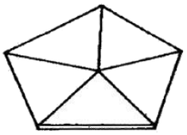
- 1개
- 2개
- 3개
- 4개
(정답률: 69%)
3. 수준 측량의 기고식 야장이 아래 표와 같을 때 중간점은?
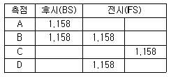
- A
- B
- C
- D
(정답률: 84%)
4. 측선 AB의 방위각과 거리가 그림과 같을 때 측점 B의 좌표 계산으로 괄호 안에 알맞은 것은?
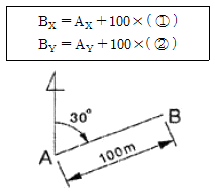
- ① cos 30°, ② sin 30°
- ① sin 30°, ② cos 30°
- ① cos 30°, ② tan 30°
- ① tan 30°, ② cos 30°
(정답률: 69%)
5. 한 점을 중심으로 6개의 삼각형으로 구성된 유심 삼각망의 조건식에 대한 설명으로 틀린 것은?
- 관측각의 수는 18개이다.
- 삼각점의 수는 8개이다.
- 변의 수는 12개이다.
- 중심각의 수는 6개이다.
(정답률: 68%)
6. 그림과 같은 수준 측량 결과에서 No.3의 지반고는 얼마인가? (단, 단위는 m이다.)
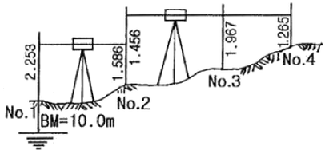
- 9.456m
- 10.156m
- 10.858m
- 11.234m
(정답률: 64%)
7. 트래버스 측량에서 교각법의 특징으로 옳지 않은 것은?
- 각 측점마다 독립하여 관측할 수 있다.
- 반복법을 사용하여 각 관측의 정밀도를 높일 수 있다.
- 각 관측에 오차가 있어도 다른 각에 영향을 주지 않는다.
- 각 관측 및 관측값 계산이 가장 신속하다.
(정답률: 48%)
8. 기차와 구차를 합한 오차를 양차라 한다. 양차 공식은? (단, R : 지구반경, D : 거리 K : 굴절률)
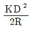
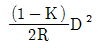
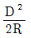
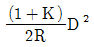
(정답률: 72%)
9. 키가 1.70M인 사람이 표고 500m 산 위에서 바라볼 수 있는 수평 거리는? (단, 지구 곡률 반경은 6,370km임)
- 79.95km
- 89.95km
- 99.95km
- 109.95km
(정답률: 35%)
10. 수준 측량 야장 용어 중 그 점의 표고만을 구하고자 표척을 세워 전시만 취하는 점에 해당하는 것은?
- 이기점(TP)
- 지반고(GH)
- 중간점(IP)
- 후시(BS)
(정답률: 73%)
11. 위거 및 경거에 대한 설명 중 옳은 것은?
- 위거는 임의 측선을 동서선 위에 정사 투영한 거리이다.
- 경거는 임의 측선을 남북 자오선에 정사 투영한 거리이다.
- 위거는 측선의 길이에 방위각이나 방위의 cos 값을 곱한 것이다.
- 경거가 동쪽으로 향하면 그 부호는 (-)이다.
(정답률: 44%)
12. 동일 전파원으로부터 발사된 전파를 멀리 떨어진 2점에서 동시에 수신하여 도달하는 시간차를 정확히 관측하여 2점간의 거리를 구하는 장치는?
- 위성 거리 측정기
- GPS
- 토털 스테이션
- VLBI
(정답률: 61%)
13. 삼각 측량은 (도상 계획)→( )→(조표)→ 기선측량→…→(삼각망의 조정) 순으로 실시한다. 괄호 안에 적당한 것은?
- 수직각 관측
- 수평각 관측
- 삼각망 조정
- 답사 및 선정
(정답률: 86%)
14. 트래버스에 대한 설명으로 옳은 것은?
- 개방 트래버스는 노선 측량의 답사 등에 이용되며 정확도가 높다.
- 폐합 트래버스는 출발점에서 시작하여 다시 시작점으로 되돌아 오는 방법이다.
- 결합 트래버스는 높은 정확도의 측량보다 소규모 측량에 이용된다.
- 트래버스의 종류는 형태만 차이가 있을 뿐 정확도에는 차이가 없다.
(정답률: 74%)
15. 삼각형 세 변이 각각 a=43m, b=46m, c=39m로 주어질 때 각 α는?
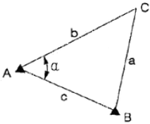
- 51°50′41″
- 60°06′38″
- 68°02′41″
- 72°00′26″
(정답률: 51%)
16. 트래버스 측량으로 면적을 구하고자 할 때 사용되는 식으로 옳은 것은?
- (배횡거×조정 위거)의 합
- (배횡거×조정 위거)의 합 ÷2
- (배횡거×조정 경거)의 합 ÷2
- (조정 경거×조정 위거)의 합
(정답률: 61%)
17. EDM을 이용하여 1km의 거리를 ±0.007m의 확률 오차로 측정하였다. 동일한 확률 오차가 얻어지도록 똑같은 기술로 100km의 거리를 측정한 경우 연속 측정값에 대한 오차는 얼마인가?
- ±0.007m
- ±0.07m
- ±0.7m
- ±7.0m
(정답률: 65%)
18. 토털 스테이션(TS)에 대한 설명으로 옳지 않은 것은?
- 인공위성을 이용하므로 정확하다.
- 사용자가 필요에 따라 정보를 입력할 수 있다.
- 레코드 모듈에 성과값을 저장, 기록할 수 있다.
- 컴퓨터와 카드 리더를 이용할 수 있다.
(정답률: 76%)
19. 삼각 측량의 삼각망에 대한 설명으로 옳지 않은 것은?
- 유심 삼각망은 피복 지역이 좁은 지역에서 적합하다.
- 삼각망을 구성하는 검기선은 변 조정에 이용된다.
- 사변형망은 가장 정확도가 높은 삼각망이다.
- 단열 삼각망은 폭이 좁고 거리가 먼 지역에 적합하다.
(정답률: 50%)
20. 측량의 종류 중 법률에 따라 분류할 때 모든 측량의 기초가 되는 측량은?
- 공공 측량
- 기본 측량
- 평면 측량
- 대지 측량
(정답률: 84%)
2과목: 임의 구분
21. 각 관측에서 방원경을 정, 반으로 관측하여 평균하여도 소거되지 않는 오차는?
- 시준축과 수평축이 직교하지 않아 발생하는 오차
- 수평축과 연직축이 직교하지 않아 발생하는 오차
- 연직축이 정확히 연직선에 있지 않아 발생되는 오차
- 회전축에 대하여 망원경의 위치가 편심되어 발생되는 오차
(정답률: 66%)
22. 트래버스 측량의 내업(계산 및 조정) 순서를 옳게 나타내는 것은?
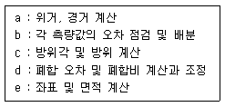
- a→c→b→d→e
- b→c→d→a→e
- b→c→a→d→e
- c→b→a→d→e
(정답률: 55%)
23. 평판 측량에서 기지점을 2점 이상 취하고 기준점으로부터 미지점을 시준하여 방향선을 교차시켜 도면상에서 미지점의 위치를 결정하는 방법은?
- 방사법
- 교회법
- 전진법
- 편각법
(정답률: 67%)
24. 수준 측량의 방법에 의한 분류 중 간접 수준 측량에 해당하지 않는 것은?
- 삼각 수준 측량
- 스타디아 측량
- 교호 수준 측량
- 항공 사진 측량
(정답률: 49%)
25. 교호 수준 측량에 대한 설명으로 옳지 않은 것은?
- 수준 노선 중에 하천이나 계곡이 있어서 레벨을 중간에 세울 수 없을 경우 실시한다.
- 교호 수준 측량은 기계 오차를 제거할 수 있다.
- 교호 수준 측량은 양차 중 구차만을 제거할 수 있다.
- 교호 수준 측량은 양안에서 측량하여 두 점의 표고차를 2회 산출하여 평균한다.
(정답률: 62%)
26. 평판을 세울 때의 오차 중 측량 결과에 가장 큰 영향을 주는 것은?
- 수평 맞추기(정준)
- 중심 맞추기(구심)
- 방향 맞추기(표정)
- 온도에 의한 오차
(정답률: 77%)
27. 측선 AB의 방위각은 210°이다. 이 측선의 역방위는?
- S30°W
- N60°E
- N30°E
- S60°W
(정답률: 56%)
28. 다음 중 수평각을 관측하는 방법이 아닌 것은?
- 배각법(반복법)
- 방향각법
- 조합각 관측법(또는 각관측법)
- 앙각법
(정답률: 75%)
29. 어떤 기선을 측정하여 다음 표와 같은 결과를 얻었을 때 최확값은?
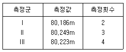
- 80.186m
- 80.219m
- 80.223m
- 80.249m
(정답률: 71%)
30. 우리나라 평면 직각 좌표계의 명칭과 투영점의 위치(동경)가 옳지 않은 것은?
- 명칭 : 서부 좌표계, 투영점의 위치(동경) : 125°
- 명칭 : 중부 좌표계, 투영점의 위치(동경) : 127°
- 명칭 : 동부 좌표계, 투영점의 위치(동경) : 129°
- 명칭 : 제주 좌표계, 투영점의 위치(동경) : 131°
(정답률: 78%)
31. 다음 AB측선의 방위각이 27°36′50″라면 BA측선의 방위각은?
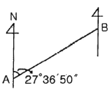
- 152°23′10″
- 207°36′50″
- 242°23′10″
- 62°23′50″
(정답률: 61%)
32. A,B점의 ①, ②, ③노선을 따라 직접 수준 측량한 표고차가 아래와 같을 때 A, B점의 표고차에 대한 최확값은?
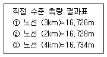
- 16.725m
- 16.727m
- 16.729m
- 16.735m
(정답률: 58%)
33. 트래버스 측량을 위한 선점상의 주의 사항으로 옳지 않은 것은?
- 후속 측량, 특히 세부 측량에 편리하여야 한다.
- 측선 거리는 될 수 있는 대로 짧게 하여 측점 수를 많게 하는 것이 좋다.
- 측선 거리는 가능하면 동일하게 하고 고저차가 크지 않아야 한다.
- 찾기 쉽고 안전하게 보존될 수 있는 장소로 한다.
(정답률: 81%)
34. 삼각 측량에 대한 설명으로 틀린 것은?
- 기선을 관측한 다음 각만을 관측하여 기선과 각에 의하여 수평 위치를 결정하는 방법이다.
- 삼각 측량은 측지 삼각 측량과 평면 삼각 측량으로 구분할 수 있다.
- 평면 삼각 측량은 지구의 표면을 구면으로 간주하는 측량이다.
- 평면 삼각측량은 관측한 기선과 각 관측 성과를 이용하여 수평 위치를 결정하며 단열, 사변형, 유심 형태의 망을 형성하여 관측점의 위치를 결정한다.
(정답률: 62%)
35. 트래버스 측량을 실시하여 출발점으로 돌아왔을 경우 출발점과 정확하게 일치되지 않을 때 이 오차를 무엇이라 하는가?
- 폐합 오차
- 시준 오차
- 허용 오차
- 기계 오차
(정답률: 76%)
36. 심프슨 제2법칙을 이용하여 면적을 구한 값은? (단, 단위는 m이다.)
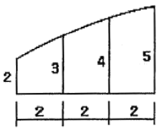
- 12m2
- 18m2
- 21m2
- 28m2
(정답률: 55%)
37. 그림과 같이 반지름이 다른 2개의 단곡선이 그 접속점에서 공통 접선을 갖고 곡선의 중심이 공통 접선과 같은 방향에 있는 곡선은?
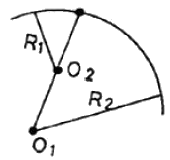
- 복심 곡선
- 반향 곡선
- 횡단 곡선
- 쌍곡선
(정답률: 68%)
38. 지모를 표현하는 지성선 중 등고선과 직교하는 선이 아닌 것은?
- 분수선(능선)
- 합수선(요선)
- 최대 경사선
- 경사 변환선
(정답률: 49%)
39. 노선 측량의 실측 단계에서 행하여지는 주요 내용과 거리가 먼 것은?
- 지형 측량
- 노선의 도상 선정
- 중심선 측량
- 종·횡단 측량
(정답률: 55%)
40. 세 변의 길이가 30m, 40m, 50m인 삼각형의 면적은?
- 500m2
- 550m2
- 600m2
- 650m2
(정답률: 77%)
3과목: 임의 구분
41. GPS 위성에서는 다양한 정보가 포함된 반송파를 연속적으로 반송한다. 이와 관련된 코드 및 신호가 아닌 것은?
- P
- C/A
- L2
- R
(정답률: 63%)
42. 단곡선을 설치할 때 도로의 시점에서 곡선 시점까지의 거리가 427.68m, 곡선 종점까지의 거리는 554.39m일 때 시단현은? (단, 중심 말뚝 간격은 20m이다.)
- 12.32m
- 7.68m
- 14.39m
- 4.39m
(정답률: 32%)
43. GPS 측량의 일반적 특성이 아닌 것은?
- 측량 거리에 비하여 상대적으로 높은 정확도를 가지고 있다.
- 지구상 어느 곳에서나 이용이 가능하다.
- 위치 결정에 기상의 영향을 많이 받는다.
- 하루 24시간 어느 시간에서나 이용이 가능하다.
(정답률: 80%)
44. 도로의 시점으로부터 단곡선의 교점(IP)까지의 추가 거리가 432.10m, 곡선의 교각(I)이 88°, 곡선 반지름(R)이 200m일 때 종곡점까지의 거리는?
- 497.69m
- 524.75m
- 546.14m
- 571.76m
(정답률: 35%)
45. 원곡선 설치를 위해 접선장의 길이가 18m이고, 교각이 21°30′일 때의 반지름 R은?
- 94.81m
- 91.40m
- 72.63m
- 63.83m
(정답률: 41%)
46. 양단면의 면적이 A1=100m2, A2=50m2일 때 체적은? (단, 단면A1에서 단면A2까지의 거리는 15m이다.)
- 800m3
- 930m3
- 1,125m3
- 1,265m3
(정답률: 65%)
47. 축척 1 : 50,000 지형도에서 표고가 각각 170m,125m인 두 지점의 수평 거리가 30mm일 때 경사 기울기는?
- 2.0%
- 2.5%
- 3.0%
- 3.5%
(정답률: 55%)
48. 노선 측량에서 완화 곡선이 아닌 것은?
- 클로소이드 곡선
- 렘니스케이트 곡선
- 3차 포물선
- 머리핀 곡선
(정답률: 77%)
49. 토공량, 저수지나 댐의 저수 용량 및 콘크리트량 등의 체적을 구하기 위한 방법이 아닌 것은?
- 단면법
- 점고법
- 등고선법
- 우모법
(정답률: 46%)
50. 단곡선에서 교각 I=120°, 곡선 반지름 R=200m일 때 두 번째 중앙종거 M2는?
- 12.5m
- 22.5m
- 26.5m
- 40.5m
(정답률: 29%)
51. 면적 계산에서 경계선을 2차 포물선으로 보고 지거의 두 구간을 한조로 하여 면적을 구하는 방법은?
- 심프슨 제 1법칙
- 심프슨 제 2법칙
- 모눈종이법
- 횡선법
(정답률: 64%)
52. 지형의 표현 방법 중 지형이 높아질수록 색을 진하게, 낮아질수록 연하게 하여 농도로 지표면의 고저를 나타내는 방법은?
- 채색법
- 우모법
- 등고선법
- 음영법
(정답률: 76%)
53. 지형 측량의 순서를 바르게 나열한 것은?
- 세부 측량 → 측량 계획 작성 → 골조 측량 → 측량 원도 작성
- 측량 계획 작성 → 세부 측량 → 골조 측량 → 측량 원도 작성
- 세부 측량 → 골조 측량 → 측량 계획 작성 → 측량 원도 작성
- 측량 계획 작성 → 골조 측량 → 세부 측량 → 측량 원도 작성
(정답률: 76%)
54. 노선 측량의 곡선 중 평면 곡선에 해당하지 않는 것은?
- 복심 곡선
- 단곡선
- 종단 곡선
- 반향 곡선
(정답률: 43%)
55. 그림과 같은 지형의 수준 측량결과를 이요하여 계획고 9m로 평탄 작업을 하기 위한 성(절)토량은? (단, 토량의 변화율을 고려하지 않고, 각 격자의 크기는 같다.)
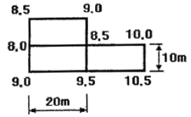
- 성토량=50m3
- 성토량=25m3
- 절토량=50m3
- 절토량=25m3
(정답률: 52%)
56. 현 길이의 중점에서 수선을 올려 곡선을 설치하는 방법으로 중심 말뚝을 설치할 필요가 없는 곡선 설치와 기존 곡선의 경사 또는 수정에 주로 사용되는 곡선의 설치 방법은?
- 편각법
- 종횡거법
- 이정량법
- 중앙 종거법
(정답률: 58%)
57. 기본 지형도의 등고선 표시 방법이 옳은 것은?
- 주곡선은 가는 실선이고, 간곡선은 가는 긴 파선이다.
- 간곡선은 가는 실선이고, 조걱선은 일점 쇄선이다.
- 보조 곡선은 이점 쇄선이고, 계곡선은 실선이다.
- 계곡선은 가는 실선이고, 주곡선은 파선이다.
(정답률: 70%)
58. 지구를 둘러싸고 6개의 GPS위성 궤도는 각 궤도간 몇 도의 간격을 유지하는가?
- 30
- 60°
- 90°
- 120°
(정답률: 77%)
59. 위성과 수신기 사이의 거리를 계산하여 위치를 결정하는 식으로 옳은 것은?
- 전파의 속도×전송 시간
- R코드 속도×전송 속도
- P코드 거리×전파의 파장 거리
- L1 신호 거리×전파의 속도
(정답률: 57%)
60. A점과 B점의 수평거리가 480m이고, A점의 표고가 82m, B점의 vy고가 97m일 때 AB 사이의 표고가 88m되는 C점의 A점으로부터의 수평거리
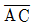
는?- 192m
- 210m
- 270m
- 288m
(정답률: 31%)